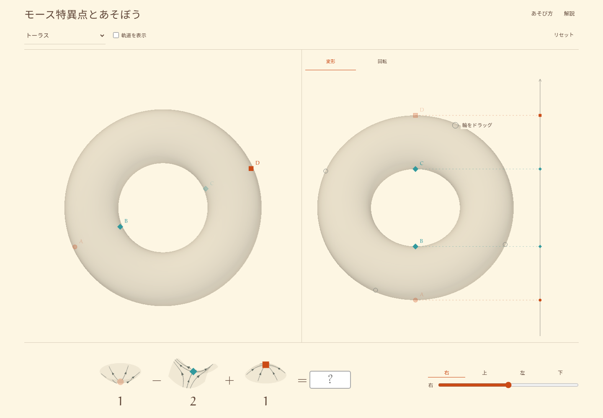
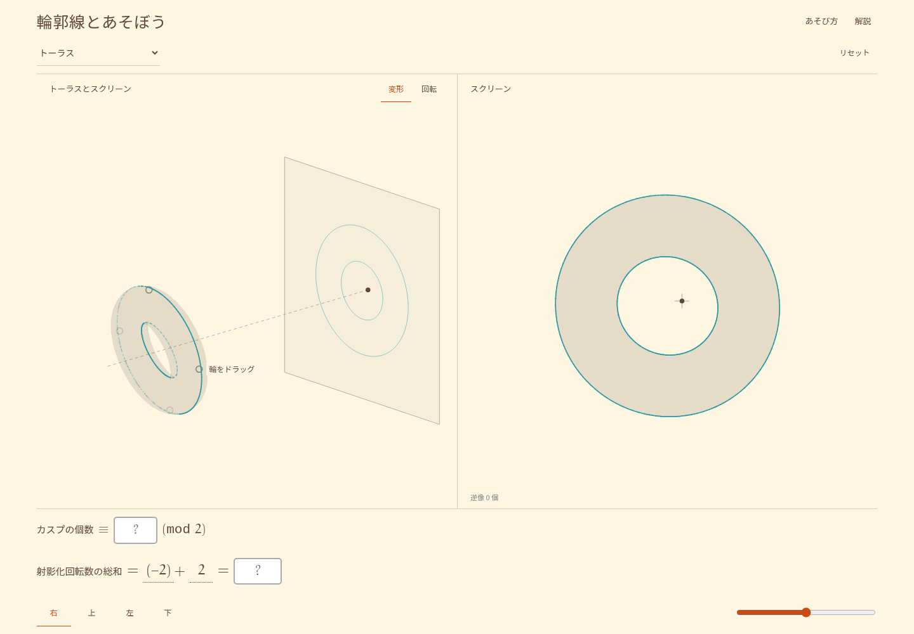

モース特異点とあそぼう

曲面を回転・変形して、山・谷・峠の個数とオイラー数の関係を調べます。
理化学研究所 iTHEMS 基礎科学特別研究員
可微分写像のトポロジーに興味があります。最近は、拡張写像の特異点を用いて元の写像のトポロジーを調べる「特異Seifert膜・特異スライスの手法」や、その理論的背景を調べています。
数学の講演、科学技術コミュニケーション、動画やグッズの制作などをしています。日曜数学会での講演、学術バーQでのイベント、CoSTEPでの活動をまとめています。

曲面を回転・変形して、山・谷・峠の個数とオイラー数の関係を調べます。

曲面を回転・変形して、スクリーンに映る輪郭線やカスプの変化を調べます。
係数を動かして、方程式の解と判別集合を調べます。
複素平面に曲線を描いて、積分値を調べます。
これまでのおしらせ、定期的なスケジュール、集会の参加予定をまとめています。